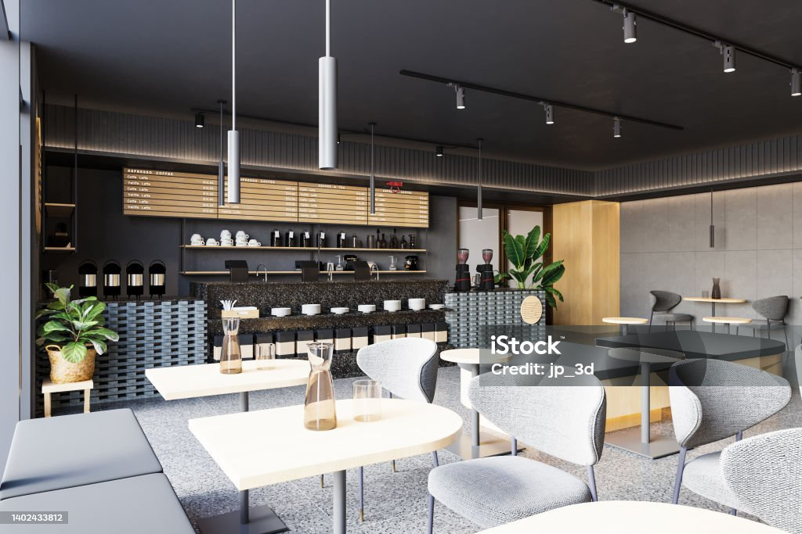
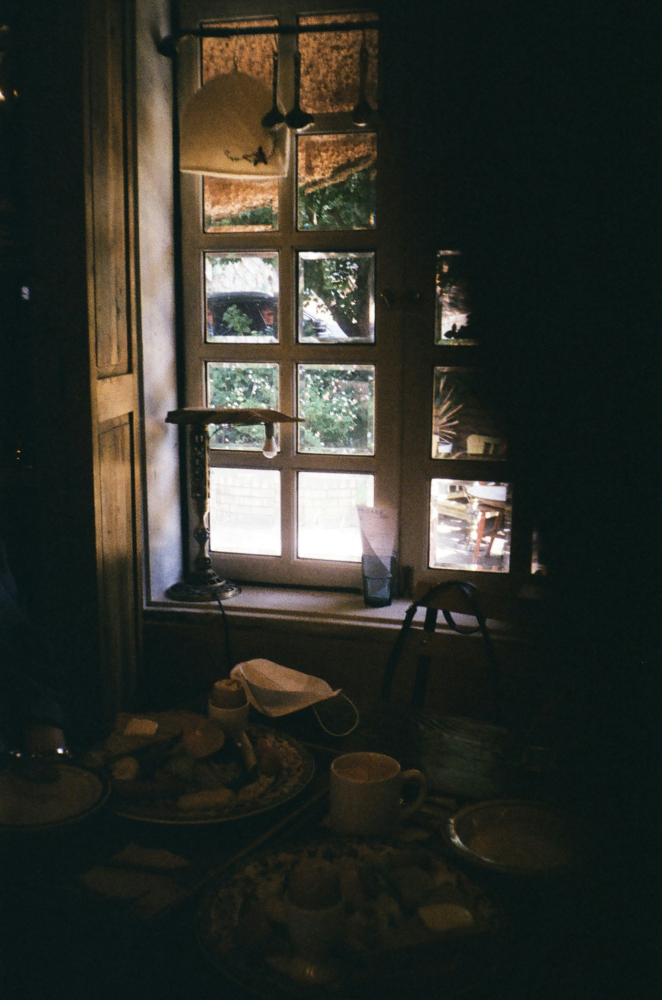
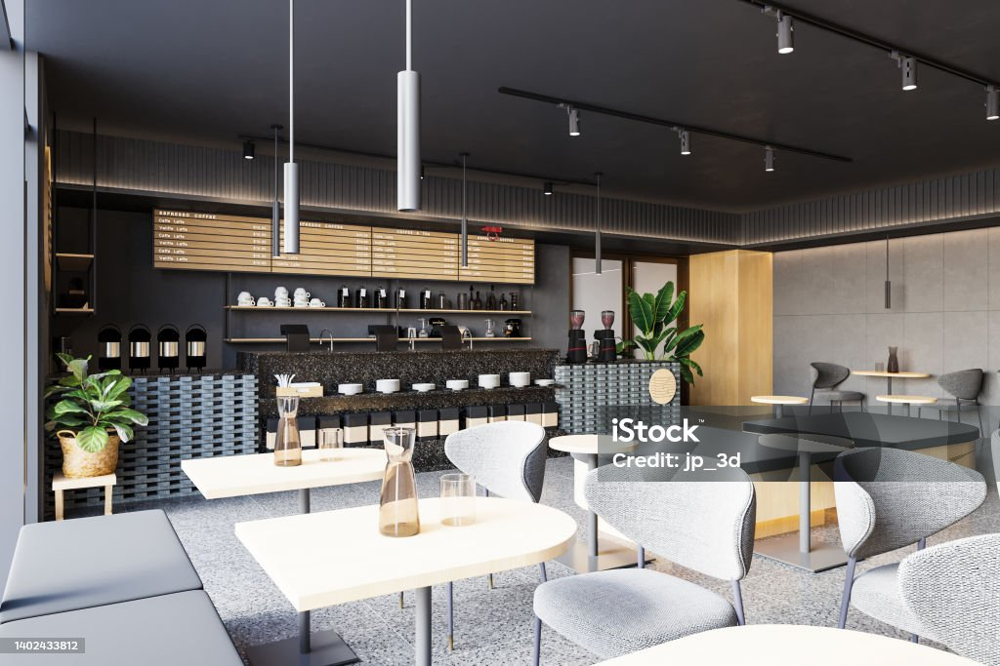
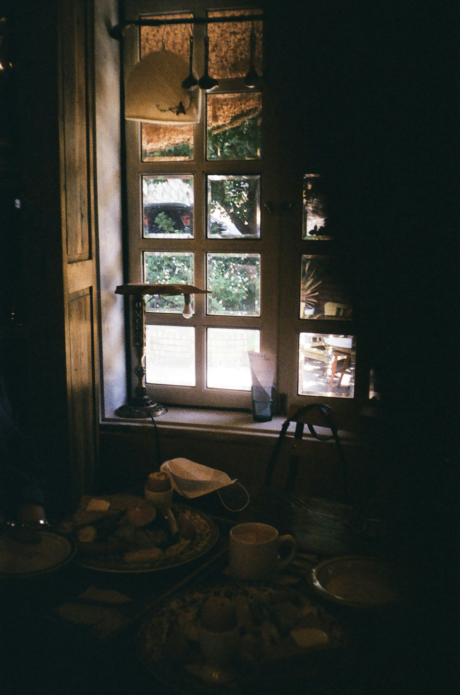

“ひとり時間”にちょうどいい。
都心の喧騒から少し離れた静かな立地。音楽や照明も落ち着いた空間設計で、読書やリモートワークにもぴったりです。
豆は京都の老舗ロースターから。
毎朝お店で豆を挽き、丁寧に抽出。味・香り・温度すべてにこだわった一杯をどうぞ。

朝の30分を、特別な時間に。
出勤前にふらっと立ち寄れる。そんな時間が、1日をちょっと豊かにしてくれるはず。
都心の喧騒から少し離れた静かな立地。音楽や照明も落ち着いた空間設計で、読書やリモートワークにもぴったりです。
毎朝お店で豆を挽き、丁寧に抽出。味・香り・温度すべてにこだわった一杯をどうぞ。
出勤前にふらっと立ち寄れる。そんな時間が、1日をちょっと豊かにしてくれるはず。
とても落ち着いていて、1人でも気軽に入れました。読書もはかどって大満足です。
（30代・女性）
出勤前に毎朝立ち寄っています。コーヒーの香りに癒されて、1日が気持ちよく始まります。
（20代・男性）
席の間隔もちょうどよく、リモートワークにもぴったりでした。また利用したいです！
（40代・女性）
1分で完了・トーク画面からすぐ予約できます。
LINEで予約する